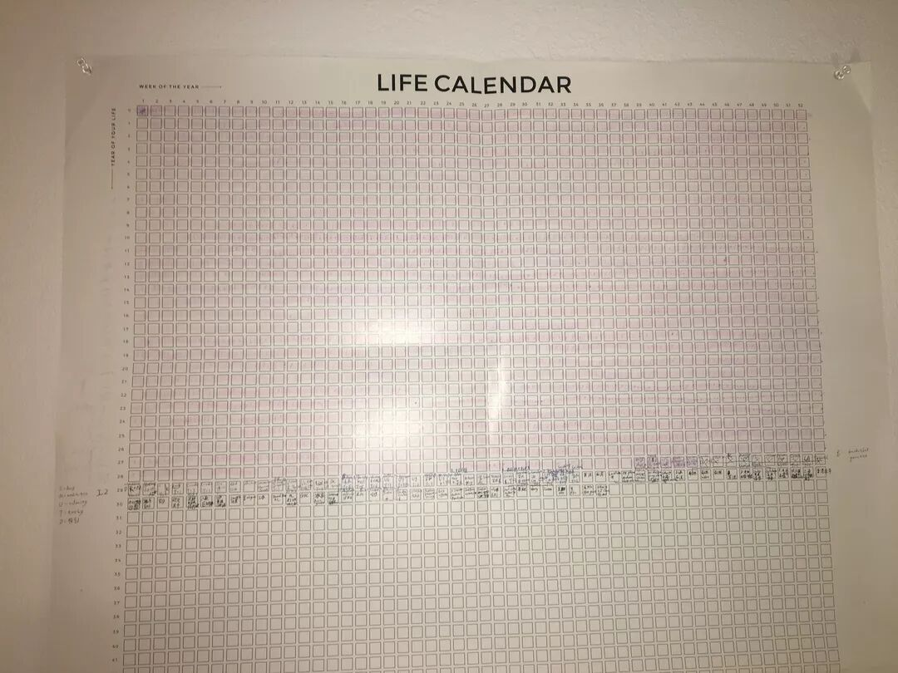
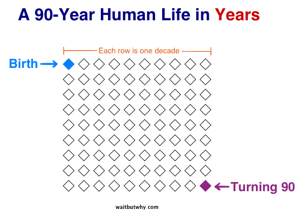
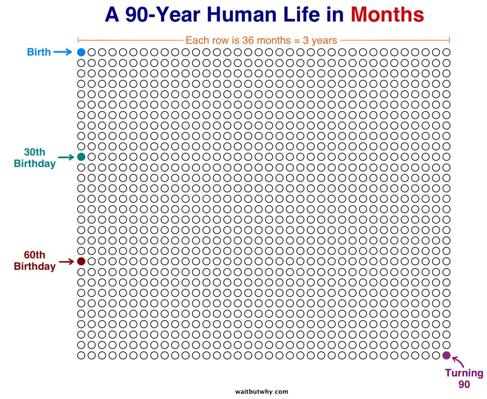
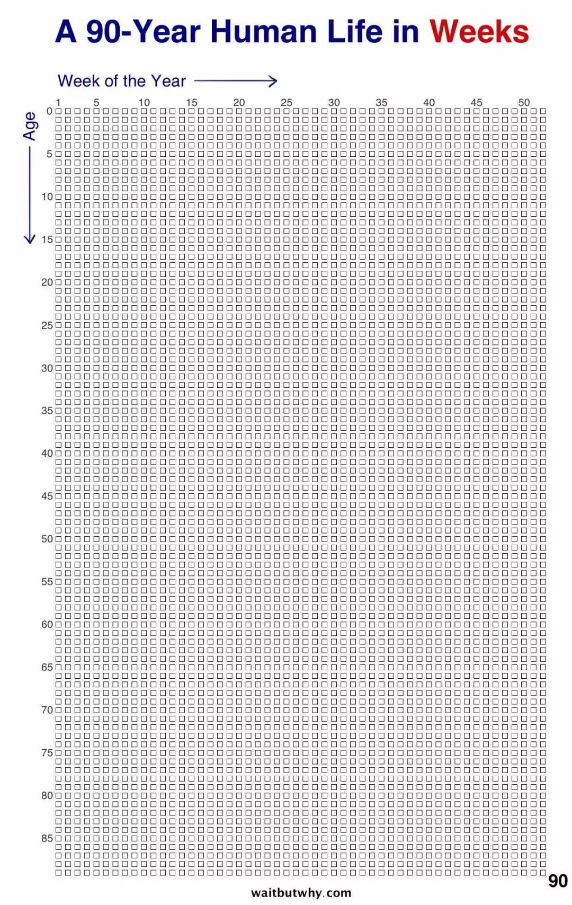
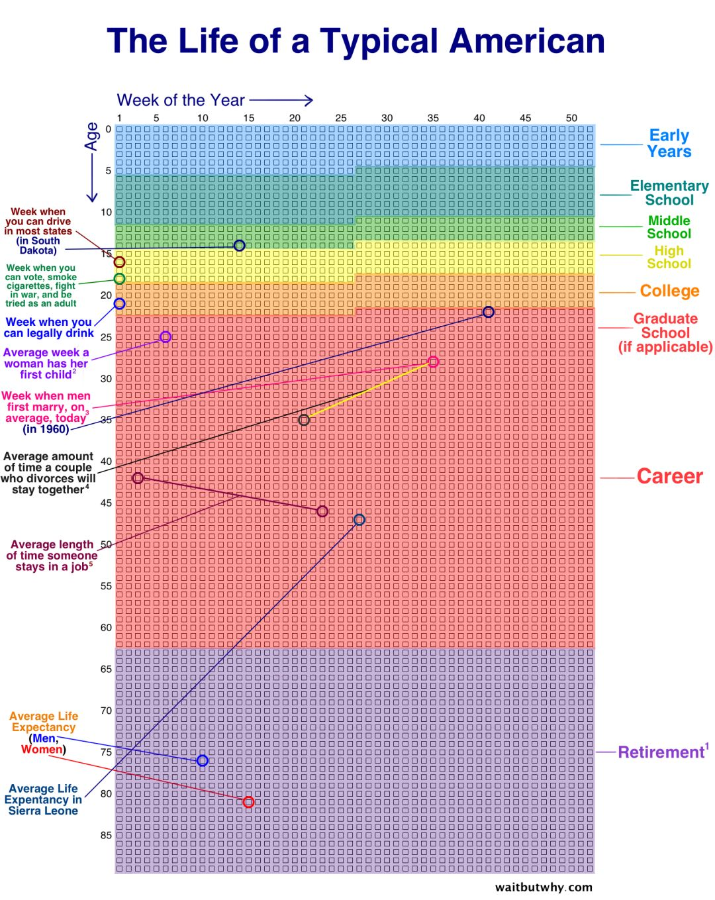
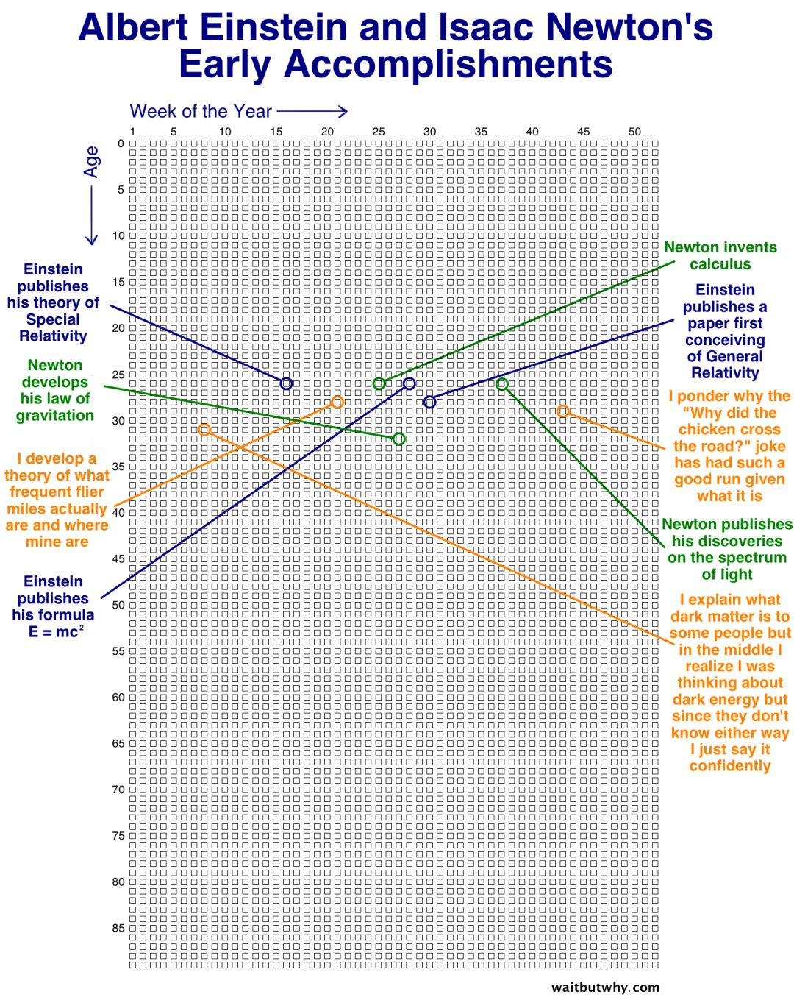
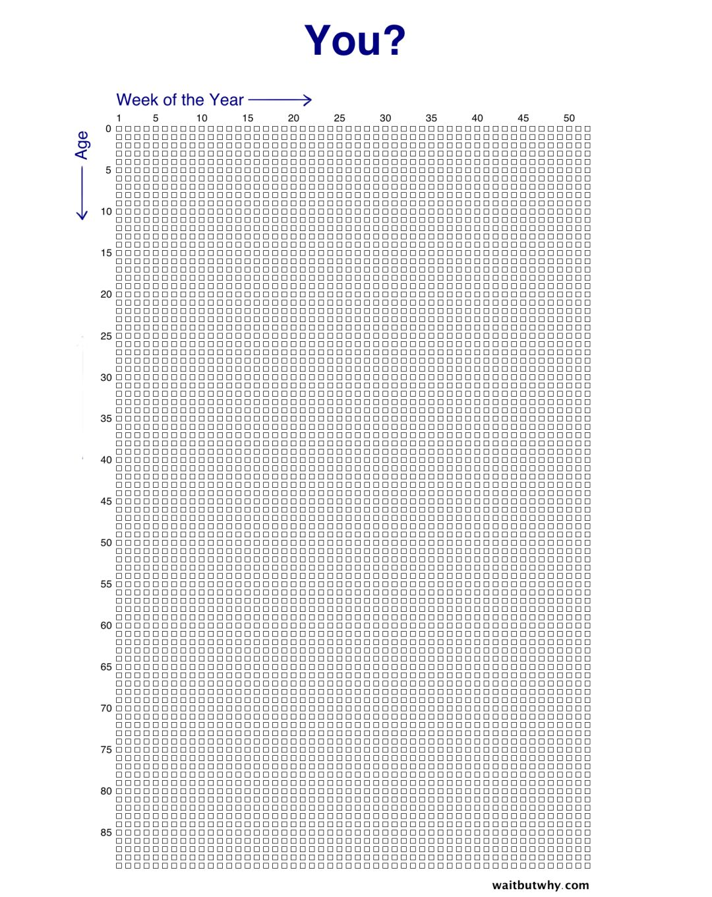
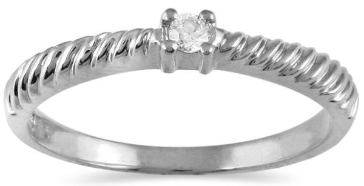
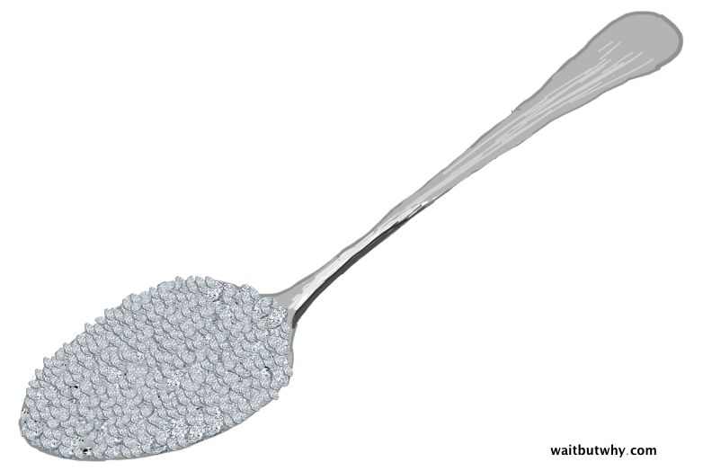
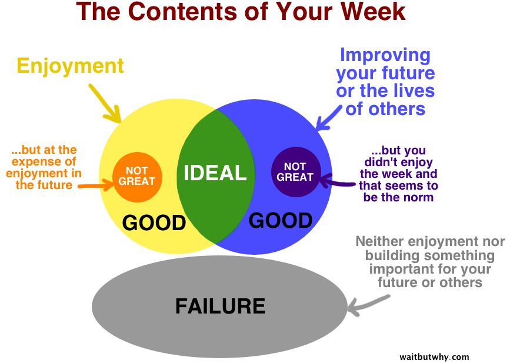

我真的很中意Wait but Why的专栏（https://waitbutwhy.com/）。专栏的作者Tim Urban总是能挑中一个问题，然后从最最基本的道理开始推导，带领读者一步步推导出最符合理性的结论。
他的专栏也总是让我受益良多，比如在我书房里的这个Life Calendar就是从他的专栏商店买的，是一个给了我很多力量的工具。

今天就想分享一下他的文章，挑选一些他的文字翻译，盗一些他的图，然后夹带一点自己的私货。找原文的话请看https://waitbutwhy.com/2014/05/life-weeks.html。
（下文开始是翻译）
如果把一个人的人生以年为单位展开，看起来长这个样子。

以月为单位展开长这样。

不过我们今天会好好地以周为单位去研究一下人生。

这个图中的每一行都代表一年，图中一共有90行，代表了一个人从0岁一直长到90岁的人生。
我们总会感觉我们的人生似乎有无数周时间，但是要是这么铺开了，放在你眼前给你看，你会发现它们是可以被数清的，一个一个的，并没有那么多。
我们来看看一个普通的美国人是如何度过他们的每一周的。

爱因斯坦的长这个样子。

那么你的图长什么样子呢？

有的时候人生看起来很短暂，有的时候又似乎非常长。这边的这张周表可以让你清楚地意识到人生绝对是有限的，你的一生一共就这么多周，不多也不少。
既然这样，也许我们应该用“珍贵”来形容我们的每一周了。这个世界会有数不清周的时间，而你只有那么多周的时间。既然我们用“珍贵”来形容我们的每一周，我们就把我们的每一周想象成一颗钻石吧，比如一颗0.05克拉的钻石，长这个样子。

如果我们把每颗钻石的体积乘以我们一生的星期数（90*52 = 4680），我们大概能有一勺子的钻石，长这样。

面对这样一勺钻石，有一个显而易见的问题值得探讨，“你到底有没有好好地利用好每一个星期呢？”
我个人认为当我用这样的方式度过一个星期的时候，我就有好好地利用好这一个星期了。
1. 我好好地享受了这颗钻石。
2. 我用这颗钻石利用了起来，使得我今后可以更好地享受别的钻石，或者我让别人可以更好地享受他们自己的钻石。
换句话说，你一共也就有这么一小勺的钻石。你肯定是尽可能地想要好好地把这一小勺钻石利用起来的。要是其中的一颗钻石没让你爽的话，至少也要让你今后用别的钻石的时候爽吧?理想状态下，你的钻石的使用最好可以同时兼顾#1 和#2（这也常常是可能的，比如如果你热爱你的工作的话）。
当然，要是你在享受一颗钻石的时候把你别的钻石都毁了，那就不太理想了。同样要是你一直在用钻石让你今后的钻石用起来爽，但是你却从来不把钻石用来让自己开心，那也不太妙。
最差的情况应该是你在用一颗钻石的时候，又没有用在#1，也没有用在#2上。有的时候这种最差的情况确实会发生，比如说你在做一份不太对劲的工作，或者你陷入一段不太对头的关系里面。这种情况的发生通常是因为当事人缺乏决断的勇气，不够自律，或者没有啥创造力。
我们都经历过这种最差的情况，真的感觉不太好。要是你连续几周都是这种情况，你肯定会非常得低落，丧失希望，备受挫折。每个人不可避免都会经历这些，而且有的时候这还蛮重要的。通常人生中大的转变往往都源自这种最差的情况。当然我们也要小心，不要一直陷在这种最差的境遇下面走不出来。
总结一下刚刚我们说的，大致如下图。

通常人们陷入最差的境遇都是因为没有好好地把事情考虑清楚。人生最重要的技能之一就是持续不断地去反思和自省。要是没有这些，人很容易不知不觉地就把宝贵的钻石都浪费掉了。
为了帮助大家坚持自省，我们（Tim Urban）做了一个人生日历（就是我一开头展示的那个东西）。我们希望这个日历可以帮助你树立人生的目标，并且持续不断地向着目标的方向走下去。同时我们也希望这个日历可以提醒你为自己过去的小成就感到骄傲，让你感谢那些助你完成小目标的小钻石。
人生日历常常提醒我这些有限的空白的格子都是属于我的。我们常常会觉得我们的人生也就这样子了。但是这么一大堆的空白格子其实完完全全都由我自己支配。所有人，不管是那些你崇拜的人，还是那些历史中的英雄，他们都是用一模一样的这些空白的格子完成了他们所完成的一切。
这些空白的格子也常常提醒我时间会带走一切，不管每周发生了什么，下一周你都会有一个全新的，空白的格子。这让我很想跳过每年的新年计划，因为新年计划总是没啥用。其实不如每周日的晚上都给自己的下一周一个“下周计划”。每一个空白的格子都是一个崭新的契机。
（结果居然全文翻译完了，Tim Urban真的写得好棒。）